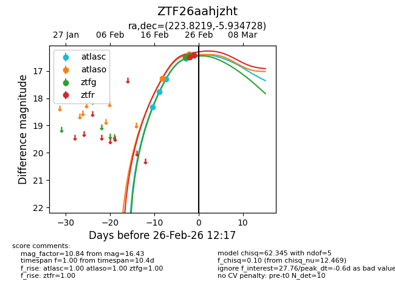
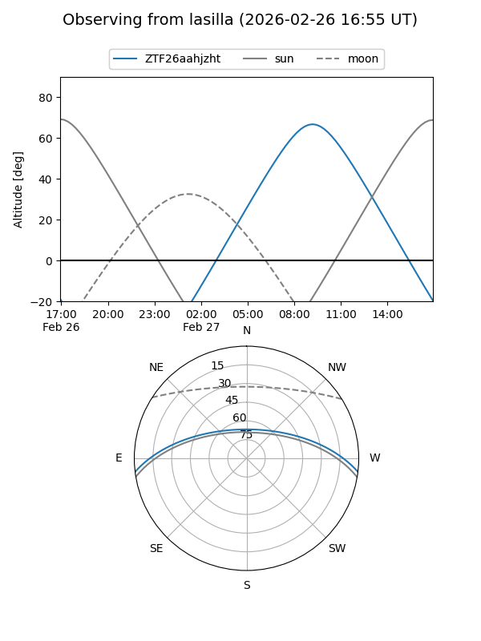
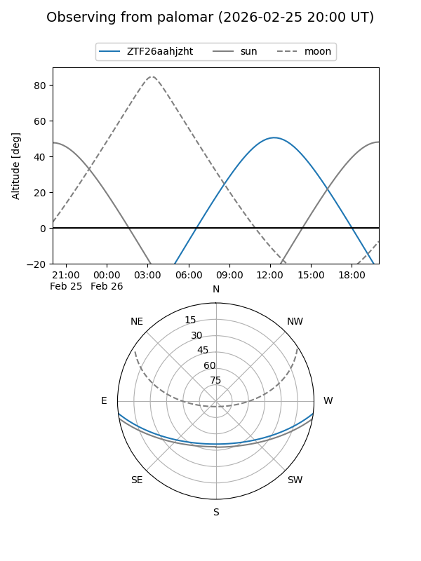
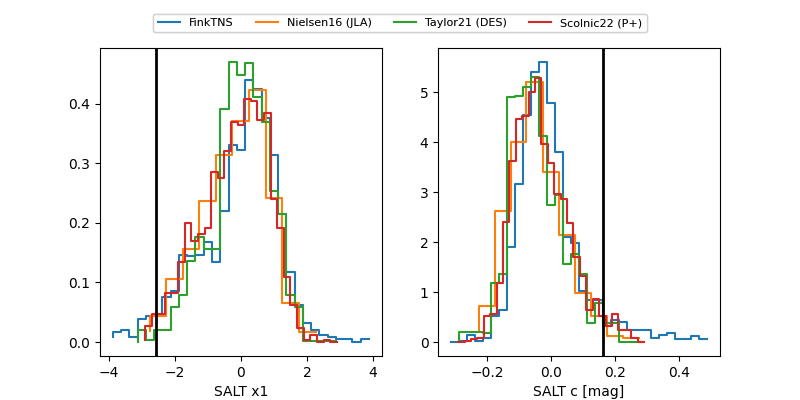

ZTF26aahjzht
Target ZTF26aahjzht at 2026-02-26 12:18
Aliases and brokers:
FINK: link
Lasair: link
ALeRCE: link
alt names
ZTF26aahjzht (ztf,fink_ztf)
Coordinates:
equatorial (ra, dec) = 223.8219,-5.93473
equatorial (HMS+DMS) = 14:55:17.26,-05:56:05.02
galactic (l, b) = (349.7083,+45.39234)
Flags:
Photometry:
last atlasc=16.54, atlaso=16.38, ztfg=16.42, ztfr=16.43
4 atlasc, 2 atlaso, 2 ztfg, 2 ztfr detections
Lightcurve

Visibility


Additional plots
